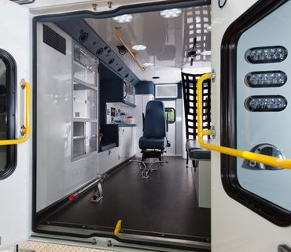

Contact us
Our Services
We specialize in stress-free medical transportation across all five boroughs, with services designed for your comfort and convenience. For doctor’s visits, our friendly, punctual drivers provide comfortable rides with extra space and door-to-door assistance. Wheelchair users can rely on our accessible vans featuring ramps, securement systems, and drivers trained in safe, dignified transport. For recurring treatments, we offer personalized scheduling with consistent drivers who understand your routine—ensuring you never miss an appointment. Our coming-home service delivers extra care post-surgery, with smooth rides, help with medical items, and a focus on your comfort so you can rest easy. Every ride prioritizes safety, timeliness, and compassionate service.
We Need your Skills
Looking for how to help? We are growing our family, explore our job opportunities
Join our Big Family
Be a part of something special, work with amazing team members and create exciting exeperiences
As a resut our amazing services, our clients quickly become family. We proudly offer a full range of transportation services, where every ride is handled with the utmost care and attention. From the moment you book with us, we work tirelessly to ensure: Flawless, stress-free journeys Punctuality you can set your watch by Personalized service that anticipates your needs
Service Benefits
Here's a list of the services we offer:
- Non-emergency Medical Transportation
- Wheelchair Accessible Transportation
- Medical Appointment Transportation

Here are our key features
At Five Boroughs Transport Ltd, we’re always looking for compassionate, skilled professionals to join our growing family. We currently have several open positions for those passionate about making a difference in our transportation service.Experienced and Trained Drivers
Five Boroughs Transport Authority LLC prioritizes experienced, trained drivers to ensure safety, efficiency, and ADA compliance. By leveraging NYC-specific certifications and continuous training, the system minimizes risks and enhances service quality.Well-maintained fleet of vehicles
Our fleet of medical transport vehicles is meticulously maintained to meet the highest standards of safety, hygiene, and reliability. Each vehicle is regularly serviced and fully equipped with essential medical equipment to ensure patients travel in comfort and with the care they need. Whether it's non-emergency transport or specialized medical transfers, we prioritize a smooth, secure, and dignified journey for every passenger.Advanced Booking System
Our Advanced Booking System is a centralized platform designed to streamline trip scheduling, dispatching, and management for medical, social service, and disability-related transportation across New York City’s five boroughs (Manhattan, Brooklyn, Queens, The Bronx, and Staten Island).